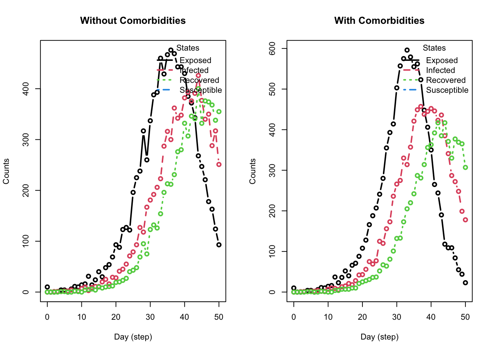

Part 2b: Advanced Modeling - Multiple Diseases, Tools, and Events
As mentioned in Part 1, epiworldR models can have multiple viruses, tools, and events. In this part of the workshop, we’ll walk through an example of an advanced model with multiple interacting pieces. We’ll then look at an example of modeling comorbidities.
Example Scenario 1: Simultaneous COVID-19 and Flu Outbreaks
The example implements the following scenario:
- Diseases: COVID-19 and Flu
- Population size: 50,000 agents
- Contact Rate: 4
- Recovery Rate: \(\frac{1}{4}\) (same for both diseases)
-
COVID-19 Parameters
- Initial Prevalence: 0.001
- Transmission Rate: 0.5
-
Flu Parameters
- Initial Prevalence: 0.001
- Transmission Rate: 0.35
We’ll go through the process step-by-step. After each step, we’ll run the model for 50 days and plot it to illustrate how each added component changes the base model.
Model Setup
We start with a ModelSIRCONN model for COVID-19. We’ll add the flu virus and our tools and events to this base model.
Add the Flu Virus
Create the second virus using the virus() function. The parameter prob_infecting is the transmission rate. The parameter as_proportion tells the function to interpret the prevalence as a proportion of the population, rather than a fixed value.
Add the virus to the model with the add_virus() function.
Add a Tool (Vaccine)
In epiworldR, agents use tools to fight diseases. Create the vaccine tool using the tool() function, with parameters that indicate how the tool modifies the disease parameters. We set our vaccine to reduce the susceptibility of agents by 90%, the transmission rate of infected agents by 50%, and the death rate by 90%. The vaccine further enhances the recovery rate by 50%.
Use the set_distribution_tool() function to define the proportion of the population to receive the tool (set here to 50%).
Add the vaccine to the model using the add_tool() function.
Note how the vaccine severely limits the number of infected agents.
Add Events
In epiworldR, all models automatically have a global event that runs each day to update the agents. For this example, we’ll add two additional events that represent public health interventions that start partway through the simulation as the dual-disease outbreak begins to gain traction:
- Beginning on Day 10, a policy of social isolation is adopted which reduces the contact rate to 2
- Beginning on Day 20, a TV advertisement is run increasing awareness of the outbreak, reducing the contact rate further to 1.5
Create these events using the globalevent_set_params() function, specifying the day to run the event.
Add the events to the model with the add_globalevent() function.
Note the sharp change to the infected curve corresponding to adoptiong of the social isolation policy.
Full Model Summary
With our advanced model complete, we can view the summary, noting the events, viruses, and tools we added to the model.
________________________________________________________________________________
________________________________________________________________________________
SIMULATION STUDY
Name of the model : Susceptible-Infected-Removed (SIR) (connected)
Population size : 50000
Agents' data : (none)
Number of entities : 0
Days (duration) : 50 (of 50)
Number of viruses : 2
Last run elapsed t : 102.00ms
Total elapsed t : 352.00ms (4 runs)
Last run speed : 24.31 million agents x day / second
Average run speed : 28.39 million agents x day / second
Rewiring : off
Global events:
- Update infected individuals (runs daily)
- Set Contact rate to 2 (day 10)
- Set Contact rate to 1.5 (day 20)
Virus(es):
- COVID-19
- Flu
Tool(s):
- Vaccine
Model parameters:
- Contact rate : 1.5000
- Recovery rate : 0.2500
- Transmission rate : 0.5000
Distribution of the population at time 50:
- (0) Susceptible : 49900 -> 23297
- (1) Infected : 100 -> 9
- (2) Recovered : 0 -> 26694
Transition Probabilities:
- Susceptible 0.98 0.02 0.00
- Infected 0.00 0.72 0.28
- Recovered 0.00 0.00 1.00Reproductive Numbers
The model computes two reproductive numbers, one for each virus.
Example Scenario 2: Comorbidities Using Logit Functions
Often, we want to model the effects of comorbidities on a disease. In this example, we’ll examine the effects of obesity on the probability of recovery from the flu.
Model Setup
Create two identical models using the ModelSEIRCONN() function. One will have comorbidities, the other will not.
Code
# With comorbidities
model_comorbid <- ModelSEIRCONN(
name = "Flu",
n = 10000,
prevalence = 0.001,
contact_rate = 2.1,
transmission_rate = 0.5,
incubation_days = 7,
recovery_rate = 1/4
)
# Without comorbidities
model_no_comorbid <- ModelSEIRCONN(
name = "Flu",
n = 10000,
prevalence = 0.001,
contact_rate = 2.1,
transmission_rate = 0.5,
incubation_days = 7,
recovery_rate = 1/4
)Add Comorbidities
The file part2b_comorb.rds contains obesity data for the agents. This is formatted as a matrix with two columns: baseline and obesity. We’ll read this in and assign it to the agents of the comorbidity model using the set_agents_data() function.
Now that population includes some agents with the obesity condition.
Set Recovery Rate Based on Comorbidity
Use the virus_fun_logit() function to create a function for the probability of recovery. The function takes the following parameters:
-
vars: the variables to use in the model -
coefs: the coefficients for each variable -
model: the model object
To build the logit function, we used the following: (a) Under the logit model, the coefficient needed for the baseline probability of 0.25 is computed using qlogis(0.25). With that, we can compute the associated coefficient to obese individuals with plogis(qlogis(.25) + x) = .125 -> qlogis(.25) + x = plogis(.125) -> x = qlogis(.125) - qlogis(.25)
Use the set_prob_recovery_fun() function to set the probability of recovery function for the virus to the logit function.
Run the Model
Run both models for the 50 days with the same random seed and compare the results.
Code
verbose_off(model_comorbid)
verbose_off(model_no_comorbid)
run(model_comorbid, ndays = 50, seed = 1231)
run(model_no_comorbid, ndays = 50, seed = 1231)
op <- par(mfrow = c(1, 2), cex = .7)
plot_incidence(model_no_comorbid, main = "Without Comorbidities")
plot_incidence(model_comorbid, main = "With Comorbidities")
Notice how the comorbidity of obesity results in many more infected agents than the when the comorbidity isn’t present. Also, note how the plot_incidence() function output differs from that of the plot() function.
If you want to drill further into this data, you can get the agents’ final states using the function get_agents_states().
Exercise
Using the ModelSIRCONN() function, create a 75-day simulation of the flu and the Coronavirus Delta variant with a masking tool. Initialize the model with the flu and add the Delta variant and tool to the flu model.
Assume the following:
- Population size: 10,000 agents
- Contact Rate: 2.1
- Recovery Rate: \(\frac{1}{4}\) (same for both diseases)
-
Flu Parameters
- Initial Prevalence: 0.001
- Transmission Rate: 0.5
-
Delta variant Parameters
- Initial Prevalence: 0.001
- Transmission Rate: 0.3
-
Masking Tool Parameters:
- Transmission_reduction: 0.3
- Prevalence: 0.6
Masking only influences the transmission of a disease, thus transmission reduction = 0.3, and all other parameters of this tool will be 0.0.
Run the model with seed = 1912 and plot the model parameters and reproductive numbers over time.
After how many days does the number of infections peak in this simulation? How many infections occur at the peak?